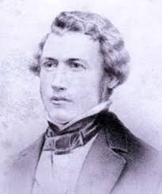

Unicycles
Different Types Of Unicycling
(hover over the quote to see the book title)
Freestyle This is a term used to describe the unicycle competition where music, movement and high skill level are mixed. The most common size for freestyle is a 20" wheel. Freestyle unicycles have slick tyres to help with tricks. At Unicycle.com we also use the term 'freestyle' to describe the basic ranges of unicycles that are suitable for majority of tricks and games, like unicycle hockey or basketball.
Road It would not be sensible to use a 20"unicycle to commute to work or school, but there are unicycles suitable for this, these we refer to as road unicycles. They generally have larger wheels and proportionally shorter cranks. 36” wheel sized Unicycles are capably for speeds exceeding 20mph but can cruise along comfortably between 12-15mph. Smaller wheel sizes will generally move a bit slower, but this can be altered by choosing different length cranks. Road Unicycles can also be used on Bridleways and smoother forest tracks when a fitted with an off-road tyre. The addition of a Schlumpf geared unicycle hub can increase the speed of a smaller wheel to that of a larger wheel. These larger wheeled unicycles are suitable for riders who are just starting out.
Muni This is the commonly known abbreviation among unicyclists for Mountain Unicycling. Muni was originally used by Pashley for their range of off-road unicycles but is now used to mean any off-road unicycle. Off-road unicycles must be very strong and generally have wide knobbly tyres and can be fitted with a brake. The wheel size can vary with 24" and 26” for technical Muni and jumping, and 27.5” and 29" for covering greater distances. Unicycles with splined & ISIS hubs and cranks are much stronger than cotter-less
Learn more:
Blogs are a great resource in any interest, not only to learn more, or to gather information, But also to join a community that will help you along as you progress in your unicycling journey.
Here is a blog you might enjoy
The unicycle blog
The unicycle is a great blog covering many technical and non-technical subjects. These include things like "Types Of Cranksets And Crank Length: A Short (But Helpful)" or "Our Unicycle Jewelry Is A Hit". The best part about unicycle is that it is more than just a blog, They also sell unicycles, and like merchandise.Youtube channels
Another great form of media is video, There are many unicycling youtube channels out there.Ed pratt
Ed pratt has made in the past documentery type videos of his time unicycling around the world. Currently Ed Pratt makes vlog like videos on new experiences he has.Terry Peterson
Another channel is Terry Peterson, Terry Peterson is a muni enthusiast with many videos on the subject. He is still actively pushing out new videos with no end in sight.There are many other channels out there that you should check out, Here is a list of a few.
Unicycle Youtube Channels You Should Check Out.
Unicycle History:
The unicycle's history began with the invention of the bicycle. Comte De Sivrac first developed bicycles during the late eighteenth century. His device, called a celerifere, was a wooden horse that had two wheels joined by a wooden beam. In 1816, wooden, riding horses like these had become improved by the addition of a steering mechanism. In 1840, Kirkpatrick Macmillan introduced a mechanism for powering the hobbyhorse with his feet. During the 1860s significant progress was made with the introduction of rubber tires, metal spoke wheels, and ball bearing hubs. During 1866, James Starley invented a unique bicycle called the Penny Farthing. It is this vehicle that is thought to be the inspiration for the unicycle.
 James Starley
Born: April 21, 1830, (Albourne, United Kingdom)
Died: June 17, 1881, (Coventry, United Kingdom, age 51)
Occupation:Engineer, Businessperson, Inventor
acompleshments: Starley was an English inventor and father of the bicycle industry. He was one of the most innovative and successful builders of bicycles and tricycles. His inventions include the differential gear and the perfection of the bicycle chain drive.
Retrieved from https://en.wikipedia.org/wiki/Penny-farthing Nov 2020